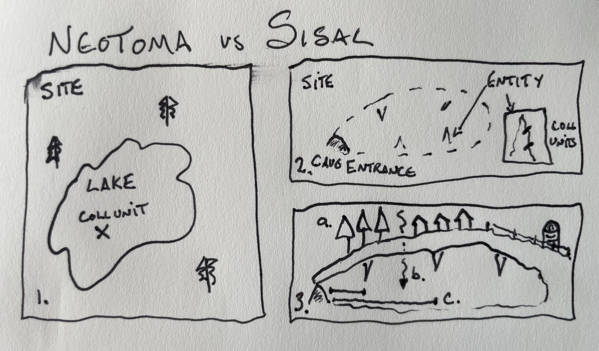

CREATE TABLE IF NOT EXISTS ndb.speleothemtypes(
speleothemtypeid serial PRIMARY KEY,
speleothemtype varchar(50),
speleothemtypenotes text,
publicationid int REFERENCES ndb.publications(publicationid),
UNIQUE(speleothemtype, publicationid)
);SISIAL – Neotoma Crosswalk
SISAL Overview
SISAL is a global database of speleothem data (Kaushal et al. 2024) that uses a standard template for data upload. SISAL is stored as a MySQL database that can be queried by users and updated by data managers. Relative to Neotoma, the database shares many common features, for example, both databases store data across sites, they measure samples using depths along collection elements, and they both record chronologies for records. However, there are several differences based on conceptual and analytic differences between the primary data within each database.

site and collection unit concepts in Neotoma and SISAL, in large part because an individual speleothem can be sampled multiple times, meaning there needs to be an additional layer between the site and the collection unit. In panel (1) a collection unit is a single core within a lake; the lake is treated as a homogeneous object, and any differences between cores within a lake would be noted in the collectionunit.notes. In panel (2) we see that an individual speleothem may have multiple cores, and each speleothem is an entity in its own right, with unique properties. In panel (3) we see that an individual entity may differ from entities within a single site (in this case a cave) based on surface vegetation, drip-water properties or distance from the cave.Whithin SISAL the “speleothem” is more broadly named the entity, and lies as a structuring concept between the site (cave, lake, bog etc.) and the individual collection unit within Neotoma. The largest work to align SISAL with Neotoma requires the addition of a new entity table linking sites and collectionunits. In SISAL this entity table includes a large number of secondary fields, including elements of vegetation and land use cover, with fixed vocabularies. To ensure that the table can be normalized properly (given the extent of normalization within Neotoma), and to provide more support for managing all data within Neotoma, we choose to separate many of the entity fields into their own tables, which can then be applied to sites more broadly. For example, SISAL includes vegetation type as a field. This could be applied to Neotoma sites as well, supporting searches by biome type.
erDiagram
sites ||--o{ speleothems : a
sites {
siteid int PK
sitename string
location geom
}
speleothems {
siteid int FK
entityid int PK
entityname string
}
speleothems ||--o{ collectionunits : b
collectionunits {
siteid int
handle string
}
entitydripheight ||--|| speleothems : drips
entitydripheight {
entityid int FK
speleothemdriptypeid int
entitydripheight real
entitydripheightunit int FK
}
speleothemdriptypes ||--o{ entitydripheight : hastype
speleothemdriptypes {
speleothemdriptypeid int pk
speleothemdriptype string
}The entity relation shows how sites would be linked to the entity elements and how we might add information to the entity through the use of related tables. In this case we use a vocabulary table to identify different speleothem drip types, and then a particular drip type and associated parameters (drip height and drip units).
Adding Speleothem Specific Tables
The speleothem entity table (named speleothems) is linked to the site’s siteid. It helps link all speleothems together at a single site, for example, within a cave complex. The entity is the specific speleothem, and each entity may have one or more collection units, representing a single core or cross-section of the entity. In the case of a speleothem, there is the organizing “Cave”, the “Stalagtite”, and then on that “Stalagtite” there is one or more collectionunits. Because the entity table relies on several fixed vocabularies as foreign key references, we define those first:
Controlled Vocabularies
For controlled vocabularies we want to provide a “general” solution for term lists, so that we can support the use of multiple potential term lists. This would allow particular sub-disciplines to define terms in a form that makes sense for their group, or uses a standard terminology that reflects the underlying processes within their community. If terms are superceeded within a community, we can support multiple terms for the same record, each tied to a specific publication, allowing us to select the publication of record, and comparing outcomes between classification systems.
For example, SISALv3 Figure 1 uses the following term set for Speleothem Types:
- stalagmite
- stalactite
- flowstone
- composite
- mixed (add note to notes sheet)
- other (add note to notes sheet)
- unknown
however, as is the case for many sets of terms, there are multiple sets of definitions that could be applied. These may be equivalent, or may differ to a greater or lesser degree. We can represent them in a controlled vocabulary table in the following manner (note that we are representing a subset of the data here):
| speleothemtypeid (PK) | speleothemtype | speleothemtypenotes | speleothemtypepublication (FK) |
|---|---|---|---|
| 1 | stalactite | Pointed or mounded structures growing upwards from cave floors. | Points to Figure 1 |
| … | … | … | … |
| 7 | stalactite | Pointed pendants growing downwards from cave ceilings. | Points to (J. Fairchild et al. 2007) |
In our table we can see that stalactite is defined twice, with identifiers 1 and 7 (the numbers are simply pointers and their abolute value is meaningless). A single speleothem entity can be associated with a speleothemtype at the time of data upload or entry based on the submitter’s chosen set of terminology, but if a separate researcher is working on a synthesis project, they will be able to see both the type, and also the source of that naming system:
| speleothemid | speleothemtypeid |
|---|---|
| 9867 | 1 |
| 9871 | 1 |
| 9873 | 7 |
So here although we might define all these speleothems as being of type “stalactite”, we know that two of these names are drawn from Figure 1, while one is derived from (J. Fairchild et al. 2007). If this is an important distinction for us, then we can separate or filter these records. If we accept that these are equivalent, we can group them, but the critical point is that we know both the name for the object, and the source from which the definition is derived.
erDiagram
speleothems ||--o{ entitydripheights : a
entitydripheights ||--|| speleothemdriptypes :b
speleothemdriptypes }o--o{ publication : a
speleothems {
entityid int PK
}
speleothemdriptypes {
speleothemdriptypeid int PK
speleothemdriptype string
publicationid int FK
}
publication {
publicationid int PK
citation text
doi doi
crossrefmetadata jsonb
}
entitydripheights {
entityid int FK
speleothemdriptypeid int FK
}speleothem. In more general cases, such as for land cover type (below), we use more general naming conventions. In all cases the join between the speleothem table and the vocabulary term will be a conjunction between the word entity and the vocabulary table name (for example entitydripheights). This structure also allows users to support harmonization of vocabulary terms, by providing multiple terms for any one entity, although only one term per reference (or publication) can be used.Speleothem Types
SISAL defines seven core speleothem types. Because these are drawn directly from the database, we assign them to a citation for the publication.
- stalagmite
- stalactite
- flowstone
- composite
- mixed (add note to notes sheet)
- other (add note to notes sheet)
- unknown
INSERT INTO ndb.publications(citation, doi)
VALUES ('Sisal v3', '10.5194/essd-16-1933-2024')
ON CONFLICT DO NOTHING;WITH pubid AS (
SELECT publicationid FROM ndb.publications WHERE doi = '10.5194/essd-16-1933-2024'
)
INSERT INTO ndb.speleothemtypes(speleothemtype, speleothemtypenotes, publicationid)
VALUES
('stalagmite', 'Pointed or mounded structures growing upwards from cave floors.', (SELECT publicationid FROM pubid)),
('stalactite', 'Pointed pendants growing downwards from cave ceilings.', (SELECT publicationid FROM pubid)),
('flowstone', 'Sheet-like structure growing on cave floors or walls.', (SELECT publicationid FROM pubid)),
('composite', '', (SELECT publicationid FROM pubid)),
('mixed', '', (SELECT publicationid FROM pubid)),
('other', 'Speleothem type not otherwise described.', (SELECT publicationid FROM pubid)),
('unknown', 'Speleothem type is not known.', (SELECT publicationid FROM pubid))
ON CONFLICT DO NOTHING;Speleothem Drip Types
We identified the relationship to varioud drip types above (REFNEEDED). Here we create the table.
In SISAL
- seepage flow
- seasonal drip
- fast flow
- mixed (add note to notes sheet)
- other (add note to notes sheet)
- unknown
Baker et al. (1997)
Baker, A., Barnes, W. L. & Smart, P. L. Stalagmite drip discharge and organic matter fluxes in Lower Cave, Bristol. Hydrological Processes 11, 1541–1555 (1997). (Baker, Barnes, and Smart 1997)
- Seepage Flow
- Seasonal Drip
- Percolation Stream
- Shaft Flow
- Vadose Flow
- Subcutaneous Flow
CREATE TABLE IF NOT EXISTS ndb.speleothemdriptypes(
speleothemdriptypeid serial PRIMARY KEY,
speleothemdriptype varchar(50),
speleothemdriptypenotes text,
publicationid int REFERENCES ndb.publications(publicationid),
UNIQUE(speleothemtype, publicationid)
);WITH pubid AS (
SELECT publicationid FROM ndb.publications WHERE doi = '10.5194/essd-16-1933-2024'
)
INSERT INTO ndb.speleothemdriptypes(speleothemdriptype, speleothemdriptypenotes, publicationid)
VALUES
('seepage flow', '', (SELECT publicationid FROM pubid)),
('seasonal drip', '', (SELECT publicationid FROM pubid)),
('fast flow', '', (SELECT publicationid FROM pubid)),
('mixed', '', (SELECT publicationid FROM pubid)),
('other', '', (SELECT publicationid FROM pubid)),
('unknown', '', (SELECT publicationid FROM pubid))
ON CONFLICT DO NOTHING;Vegetation Cover
Vegetation cover should encompass two main concepts, the cover type and the cover class. It would allow a many-to-one classification as well, providing the opportunity to describe classes as proportions of total cover within some defined bound. The SISAL database usues the following classification terms:
- evergreen
- deciduous
- shrubland
- grassland
- sparse
- barren
- mixed (add note to notes sheet)
- other (add note to notes sheet)
- unknown
We propose to modify this with a set of terms derived from the FAO Land Cover classification system:
- Barren: At least of area 60% is non-vegetated barren (sand, rock, soil) or permanent snow/ice with less than 10% vegetation.
- Permanent Snow and Ice: At least of area 60% is covered by snow and ice for at least 10 months of the year.
- Water Bodies: At least 60% of area is covered by permanent water bodies.
- Evergreen Needleleaf Forests: Dominated by evergreen conifer trees (>2m). Tree cover >60%.
- Evergreen Broadleaf Forests: Dominated by evergreen broadleaf and palmate trees (>2m). Tree cover >60%.
- Deciduous Needleleaf Forests: Dominated by deciduous needleleaf (larch) trees (>2m). Tree cover >60%.
- Deciduous Broadleaf Forests: Dominated by deciduous broadleaf trees (>2m). Tree cover >60%.
- Mixed Broadleaf/Needleleaf Forests: Co-dominated (40-60%) by broadleaf deciduous and evergreen needleleaf tree (>2m) types. Tree cover >60%.
- Mixed Broadleaf Evergreen/Deciduous Forests: Co-dominated (40-60%) by broadleaf evergreen and deciduous tree (>2m) types. Tree cover >60%.
- Open Forests: Tree cover 30-60% (canopy >2m).
- Sparse Forests: Tree cover 10-30% (canopy >2m).
- Dense Herbaceous: Dominated by herbaceous annuals (<2m) at least 60% cover.
- Sparse Herbaceous: Dominated by herbaceous annuals (<2m) 10-60% cover.
- Dense Shrublands: Dominated by woody perennials (1-2m) >60% cover.
- Shrubland/Grassland Mosaics: Dominated by woody perennials (1-2m) 10-60% cover with dense herbaceous annual understory.
- Sparse Shrublands: Dominated by woody perennials (1-2m) 10-60% cover with minimal herbaceous understory.
- Unclassified: Has not received a map label because of missing inputs.
CREATE TABLE IF NOT EXISTS ndb.vegetationcovertypes(
vegetationcovertypeid serial PRIMARY KEY,
vegetationcovertype text,
vegetationcovernotes text,
publicationid int REFERENCES ndb.publications(publicationid),
UNIQUE(vegetationcovertype, publicationid)
);WITH pubid AS (
SELECT publicationid FROM ndb.publications WHERE year = '2005' and citation ILIKE '%Land cover classification%'
)
INSERT INTO ndb.vegetationcovertypes (vegetationcovertype, vegetationcovernotes, publicationid)
VALUES ('Barren','At least of area 60% is non-vegetated barren (sand, rock, soil) or permanent snow/ice with less than 10% vegetation.', (SELECT publicationid FROM pubid)),
('Permanent Snow and Ice','At least of area 60% is covered by snow and ice for at least 10 months of the year.', (SELECT publicationid FROM pubid)),
('Water Bodies','At least 60% of area is covered by permanent water bodies.', (SELECT publicationid FROM pubid)),
('Evergreen Needleleaf Forests','Dominated by evergreen conifer trees (>2m). Tree cover >60%.', (SELECT publicationid FROM pubid)),
('Evergreen Broadleaf Forests','Dominated by evergreen broadleaf and palmate trees (>2m). Tree cover >60%.', (SELECT publicationid FROM pubid)),
('Deciduous Needleleaf Forests','Dominated by deciduous needleleaf (larch) trees (>2m). Tree cover >60%.', (SELECT publicationid FROM pubid)),
('Deciduous Broadleaf Forests','Dominated by deciduous broadleaf trees (>2m). Tree cover >60%.', (SELECT publicationid FROM pubid)),
('Mixed Broadleaf/Needleleaf Forests','Co-dominated (40-60%) by broadleaf deciduous and evergreen needleleaf tree (>2m) types. Tree cover >60%.', (SELECT publicationid FROM pubid)),
('Mixed Broadleaf Evergreen/Deciduous Forests','Co-dominated (40-60%) by broadleaf evergreen and deciduous tree (>2m) types. Tree cover >60%.', (SELECT publicationid FROM pubid)),
('Open Forests','Tree cover 30-60% (canopy >2m).', (SELECT publicationid FROM pubid)),
('Sparse Forests','Tree cover 10-30% (canopy >2m).', (SELECT publicationid FROM pubid)),
('Dense Herbaceous','Dominated by herbaceous annuals (<2m) at least 60% cover.', (SELECT publicationid FROM pubid)),
('Sparse Herbaceous','Dominated by herbaceous annuals (<2m) 10-60% cover.', (SELECT publicationid FROM pubid)),
('Dense Shrublands','Dominated by woody perennials (1-2m) >60% cover.', (SELECT publicationid FROM pubid)),
('Shrubland/Grassland Mosaics','Dominated by woody perennials (1-2m) 10-60% cover with dense herbaceous annual understory.', (SELECT publicationid FROM pubid)),
('Sparse Shrublands','Dominated by woody perennials (1-2m) 10-60% cover with minimal herbaceous understory.', (SELECT publicationid FROM pubid)),
('Unclassified','Has not received a map label because of missing inputs.', (SELECT publicationid FROM pubid))
ON CONFLICT DO NOTHING;WITH pubid AS (
SELECT publicationid FROM ndb.publications WHERE doi = '10.5194/essd-16-1933-2024'
)
INSERT INTO ndb.vegetationcovertypes (vegetationcovertype, vegetationcovernotes, publicationid)
VALUES ('evergreen','', (SELECT publicationid FROM pubid)),
('deciduous','', (SELECT publicationid FROM pubid)),
('shrubland','', (SELECT publicationid FROM pubid)),
('grassland','', (SELECT publicationid FROM pubid)),
('sparse','', (SELECT publicationid FROM pubid)),
('barren','', (SELECT publicationid FROM pubid)),
('mixed (add note to notes sheet)','', (SELECT publicationid FROM pubid)),
('other (add note to notes sheet)','', (SELECT publicationid FROM pubid)),
('unknown','', (SELECT publicationid FROM pubid))
ON CONFLICT DO NOTHING;CREATE TABLE IF NOT EXISTS ndb.sitevegetationcover(
siteid integer REFERENCES ndb.sites(siteid) ON DELETE CASCADE,
vegetationcovertypeid integer REFERENCES ndb.vegetationcovertypes(vegetationcovertypeid) ON DELETE CASCADE,
vegetationcoverpercent integer,
vegetationcovernotes text
);Note, that to ensure that these values do not sum to greater than 100 we need to add a trigger on insert and update to validate whether or not the vegetationcoverpercent for a siteid (possibly associated with a publicationid) sums to <= 100%.
Land Use
Similarly we want to create a land use table:
- water body
- wetland
- forest
- farmland
- pasture
- concrete and built up
- mixed (add note to notes sheet)
- other (add note to notes sheet)
- unknown
The FAO Uses a system with the following classes:
- Forest
- Forest with natural or natural assisted regeneration
- Broadleaved forest
- Coniferous forest
- Bamboo or palm forest
- Mixed forest
- Forest plantations
- Broadleaved forest plantation
- Coniferous forest plantations
- Mixed forest plantations
- Other wooded lands
- Shrubs
- Fallow
- Wooded grassland
- Other land
- Natural and semi natural land
- Barren land
- Grassland
- Marshland
- Cultivated and managed land
- Annual crop
- Perennial crop
- Pastures
- Built up area (urban or rural)
- Inland water
CREATE TABLE IF NOT EXISTS ndb.landusetypes(
landusecovertypeid serial PRIMARY KEY,
landusecovertype varchar (128) UNIQUE,
landusecovernotes text,
publicationid integer REFERENCES ndb.publications(publicationid)
);
WITH pubid AS (
SELECT publicationid FROM ndb.publications WHERE doi = '10.5194/essd-16-1933-2024'
)
INSERT INTO ndb.landusetypes (landusecovertype, landusecovernotes, publicationid)
VALUES ('water body','', (SELECT publicationid FROM pubid)),
('wetland','', (SELECT publicationid FROM pubid)),
('farmland','', (SELECT publicationid FROM pubid)),
('pasture','', (SELECT publicationid FROM pubid)),
('concrete and built up','', (SELECT publicationid FROM pubid)),
('mixed (add note to notes sheet)','', (SELECT publicationid FROM pubid)),
('other (add note to notes sheet)','', (SELECT publicationid FROM pubid)),
('unknown','', (SELECT publicationid FROM pubid))
ON CONFLICT DO NOTHING;CREATE TABLE IF NOT EXISTS ndb.sitelandusecover(
siteid integer REFERENCES ndb.sites(siteid) ON DELETE CASCADE,
landusecovertypeid integer REFERENCES ndb.vegetationcovertypes(vegetationcovertypeid) ON DELETE CASCADE,
landusecoverpercent integer,
landusecovernotes text
);Land Cover
I’m going to use this for speleothems only:
CREATE TABLE IF NOT EXISTS ndb.entitycovertypes(
entitycoverid serial PRIMARY KEY,
entitycovertype varchar(50),
entitycovernotes text
);Entity Statuses
Note that the status levels provided in the spreadsheet do not match the ones in the database.
CREATE TABLE IF NOT EXISTS ndb.speleothementitystatuses(
entitystatusid serial PRIMARY KEY,
entitystatus text
);INSERT INTO ndb.speleothementitystatuses (entitystatus)
VALUES ('current'),
('current partially modified'),
('superseded'),
('completely supersedes'),
('completely superseded by'),
('partially supersedes'),
('partially superseded by'),
('not applicable');Depth Reference
How is depth measured? I’m moving this to a higher level table (without “entity” in front of it) because I think this is important going forward regardless.
CREATE TABLE IF NOT EXISTS ndb.depthreferencesystems(
depthreferencesystemid serial PRIMARY KEY,
depthreference text,
depthreferencenotes text,
depthreferencepublicationid integer REFERENCES ndb.publications(publicationid)
);INSERT INTO ndb.depthreferencesystems(depthreference, depthreferencenotes)
VALUES
('from top', 'Measured Depth at section top (depth at bottom is depth + thickness).'),
('from base', 'Measured Depth at section top (depth at top is depth - thickness).'),
('midpoint', 'Measured depth at midpoint of the analysis unit (depth at top is depth - 0.5 * thickness).'),
('not applicable', 'Point measurement.'),
('unknown', 'Not reported or not submitted at time of data upload.'),
('assumed top', 'Not reported but submitted with assumed standard of top-depth reporting.'),
('assumed bottom', 'Not reported but submitted with assumed standard of bottom-depth reporting.'),
('assumed midpoint', 'Not reported but submitted with assumed standard of midpoint-depth reporting.');Speleothem Entity Geology
For individual speleothems within mapped system, the underlying (or overlying) geology may differ. We want to create a table of acceptable geology parameters.
Take a look at this? https://www.bgs.ac.uk/technologies/bgs-rock-classification-scheme/
CREATE TABLE IF NOT EXISTS ndb.speleothementitygeology(
speleothemgeologyid serial PRIMARY KEY,
speleothemgeology text,
speleothemgeologynotes text,
speleothemgeologypublicationid integer REFERENCES ndb.publications(publicationid)
);WITH pubid AS (
SELECT publicationid FROM ndb.publications WHERE doi = '10.5194/essd-16-1933-2024'
)
INSERT INTO ndb.speleothementitygeology (speleothemgeology, speleothemgeologypublicationid)
VALUES
('limestone', (SELECT publicationid FROM pubid)),
('unknown', (SELECT publicationid FROM pubid)),
('dolomite', (SELECT publicationid FROM pubid)),
('mixed (see notes)', (SELECT publicationid FROM pubid)),
('dolomite limestone', (SELECT publicationid FROM pubid)),
('marble', (SELECT publicationid FROM pubid)),
('marly limestone', (SELECT publicationid FROM pubid)),
('other (see notes)', (SELECT publicationid FROM pubid)),
('calcarenite', (SELECT publicationid FROM pubid));Adding Explicit Gap and Hiatus Tables
SISAL inclused explicit mentions of hiatus and gaps within collection units. Although Neotoma does mention the presence of hiatuses (or gaps), it often does not explicitly mention the position of these gaps/hiatuses or the period of time they might represent. These are often contained within the chronology.
We want to support the SISAL structure, which relates these gaps or hiatuses to the sample_id, while also applying to Neotoma and the chronology construction, so that, for example, estimates of hiatus length can be directly examined, and related to particular chronologies.
Hiatus
A hiatus is a section of the collection unit where there is a period of time during which no deposition occurs. In principle, a hiatus is an instantaneous feature, and so should occur between analysis units, or within a single analysis unit. A hiatus may have a directly inferred time-span, for example, we know that a lake dried up for 10 years. A hiatus may have an uncertain time period, for example, one that is inferred through the use of a chronology tool like Bacon.
CREATE TABLE IF NOT EXISTS ndb.hiatuses(
hiatusid serial PRIMARY KEY,
analysisunitstart integer REFERENCES ndb.analysisunits(analysisunitid),
analysisunitend integer REFERENCES ndb.analysisunits(analysisunitid),
notes text,
UNIQUE(hiatusid, analysisunitstart, analysisunitend));CREATE TABLE IF NOT EXISTS ndb.hiatuschronology(
hiatusid integer REFERENCES ndb.hiatuses(hiatusid),
chronologyid integer REFERENCES ndb.chronologies(chronologyid),
hiatuslength integer CHECK (hiatuslength >= 0),
hiatusuncertainty integer,
UNIQUE(hiatusid, chronologyid));This structure allows us to identify a hiatus within a record. It allows us to identify a hiatus that is effectively a single point in the record, or one that exists as part of a lithological unit that may span multiple analysis units.
Because the hiatus itself is linked to the analysisunitid, we are then linked to the analysts and PIs for the record, so we can know who actually identified the hiatus.
Through the ndb.hiatuschronology table we can then assign a temporal length for the hiatus along with uncertainty, but also allow a new chronology to have an updated hiatus length. Because this is tied to the chronologyid we then know the analyst who has made the assessment.
Speleothem Entity Table
CREATE TABLE IF NOT EXISTS ndb.speleothems(
siteid integer REFERENCES ndb.sites(siteid) ON DELETE CASCADE,
entityid serial PRIMARY KEY,
entityname text,
monitoring boolean,
depthreferencesystemid integer REFERENCES ndb.depthreferencesystems(depthreferencesystemid),
speleothemgeologyid integer REFERENCES ndb.speleothemgeologyid(speleothemgeologyid),
rockageid integer REFERENCES ndb.relativeages(relativeageid),
entrancedistance real,
entrancedistanceunits int REFERENCES ndb.variableunits(variableunitsid)
speleothemtypeid int REFERENCES ndb.speleothemtypes(speleothemtypeid)
);CREATE TABLE IF NOT EXISTS ndb.entityrelationship(
entityid int REFERENCES ndb.speleothems(entityid),
entitystatusid integer REFERENCES ndb.speleothementitystatuses(entitystatusid),
referenceentityid int REFERENCES ndb.speleothems(entityid)
)CREATE TABLE IF NOT EXISTS ndb.entitydripheight(
entityid int REFERENCES ndb.speleothems(entityid) ON DELETE CASCADE,
speleothemdriptypeid int REFERENCES ndb.speleothemdriptypes(spelothemdriptypeid),
entitydripheight real,
entitydripheightunit int REFERENCES ndb.variableunits(variableunitsid)
);CREATE TABLE IF NOT EXISTS ndb.entityvegetationcover(
entityid integer REFERENCES ndb.speleothems(entityid) ON DELETE CASCADE,
vegetationcovertypeid integer REFERENCES ndb.vegetationcovertypes(vegetationcovertypeid) ON DELETE CASCADE,
vegetationcoverpercent integer,
vegetationcovernotes text
);CREATE TABLE IF NOT EXISTS ndb.entitylandusecover(
entityid integer REFERENCES ndb.speleothems(entityid) ON DELETE CASCADE,
landusecovertypeid integer REFERENCES ndb.vegetationcovertypes(vegetationcovertypeid) ON DELETE CASCADE,
landusecoverpercent integer,
landusecovernotes text
);CREATE TABLE IF NOT EXISTS ndb.entitycovers(
entityid int REFERENCES ndb.speleothems(entityid) ON DELETE CASCADE,
entitycoverid int REFERENCES ndb.entitycovertypes(entitycoverid),
entitycoverthickness real,
entitycoverunits int REFERENCES ndb.variableunits(variableunitsid)
);Working with TRUE/FALSE data
There are a number of columns in the SISAL database that refer to elements such as fluid inclusions, organics or other elements that may be recorded but are not explicitly a part of the SISAL database. For these we use the table externalspeleothemdata. This allows us to define these elements and refer to an external resource using a PID. These would include (for example) references to noble_gas_temperatures, clumped_isotopes or fluid_inclusions. The structure of the ndb.externaldatabases table allows us to refer to external resources such as Dryad, PANGEA or CrossRef, if data is included within a publication. The table also supports a many-to-many relationship, so a single entity can be linked to multiple databases for various reasons.
CREATE TABLE IF NOT EXISTS ndb.externalspeleothemdata(
entityid integer REFERENCES ndb.speleothems(entityid) ON DELETE CASCADE,
externalid text,
extdatabaseid integer REFERENCES ndb.externaldatabases(extdatabaseid),
externaldescription text
);References
Baker, A, WL Barnes, and PL Smart. 1997. “Stalagmite Drip Discharge and Organic Matter Fluxes in Lower Cave, Bristol.” Hydrological Processes 11: 1541–56.
J. Fairchild, Ian, Silvia Frisia, Andrea Borsato, and Anna F. Tooth. 2007. “Speleothems.” Geochemical Sediments and Landscapes, 200–245.
Kaushal, N., F. A. Lechleitner, M. Wilhelm, K. Azennoud, J. C. Bühler, K. Braun, Y. Ait Brahim, et al. 2024. “SISALv3: A Global Speleothem Stable Isotope and Trace Element Database.” Earth System Science Data 16 (4): 1933–63. https://doi.org/10.5194/essd-16-1933-2024.